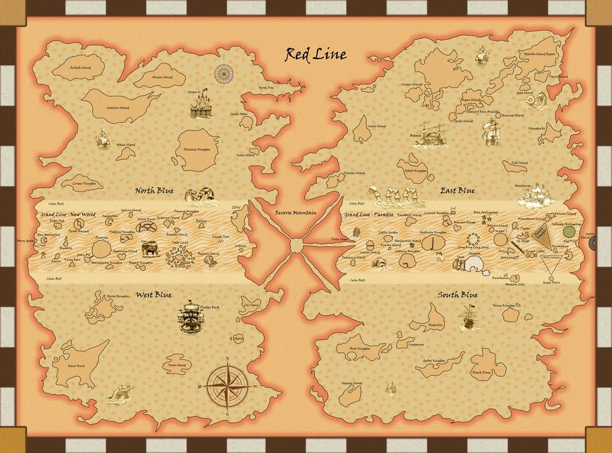

Explore the Grand Line
The Grand Line is the most dangerous and mysterious sea in the One Piece world, stretching across the globe like a belt. Follow the journey of the Straw Hat Pirates as they sail from island to island in pursuit of the ultimate treasure.
